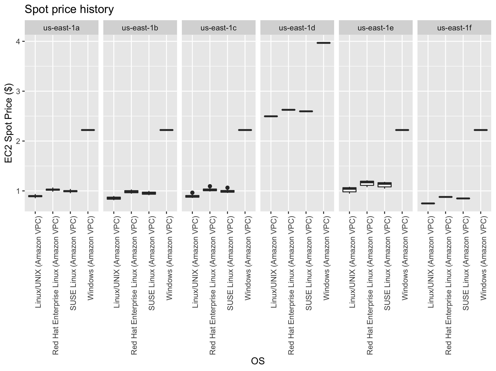
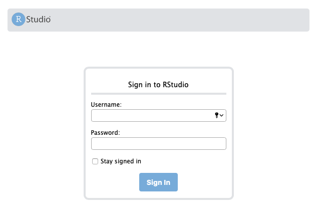
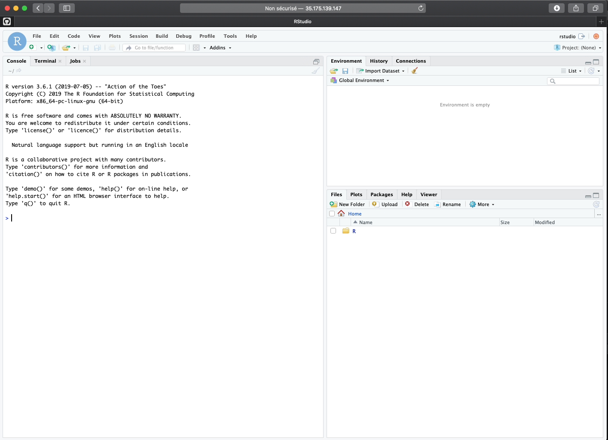

RADseq analysis cloud tutorial
Thierry Gosselin
2020-09-16
Outline:
- Tutorial introduction
- Hardware requirements
- Personal computer setup
- Amazon EC2 configurations
- Storing data in the cloud
- Starting a spot instance
- Connection with the instance
- Run Stacks
- Run RStudio
- Creating your own AMI
- Install GBS/RADseq software
- Install R and Rstudio Server
- Useful
Tutorial introduction
This step-by-step tutorial is a risk-free paragliding tandem flight into the cloud. We will guide you through the process of leveraging the cloud to analyse your RADseq data.
For an evolutionary biologist, restriction site-associated DNA sequencing (RADseq) and new genomic tools are great opportunities, but the fast-changing field can be very challenging to follow. The most important tool for RADseq, after your brain and the sequencer, is your computer. RADseq analysis can be very demanding on personal computers, there can be not enough CPU and/or memory and the analysis can crash or worse, your computer is now solely dedicated to this task and nothing else. If you’re lucky enough to have access to a large up-to-date university computer clusters this might be a good solution but they come with their share of problems.
We chose Amazon Elastic Compute Cloud (EC2) because: (i) it’s relatively easy, their’s extensive documentation and big community to ask for help; (ii) it’s relatively cheap to use machines with lots of CPU and memory. Using the cloud offers 2 more advantages:
- you can write off computer and software cost as an operating expense rather than a capital or service expenditure (depending on countries and universities).
- you control everything: no need to ask IT to update one of the numerous dependenices you’ll likely required…
Assumptions
Although you can go through this tutorial with copy and paste commands, knowing very basic Terminal commands will be useful:
- Reference card: quite useful to get through the jargon and main commands.
- Good reading: to understand the basic steps to install software with the terminal.
- Online courses: e.g. with DataCamp.
Recommendations:
In the beginning most students will feel lost and very intimidated by everything related to computers, software and RADseq analysis. Commonly the end result is that your scientific work flow is impeded. If you’re at the Master and PhD level and all the RADseq stuff is overwhelming and you’re not sleeping at night, consider:
you should focus first on biology, second, on bioinformatics (a computer is the main tool you’ll likely use in your future) and if you have time, the wet-lab part. Now, don’t get me wrong, I think the wet-lab is the most important step, but unless you want to become a wet-lab technician, my advice is stay away as much as humanly possible from the wet-lab and leave it to experts.
asking for help:
- ask your director to be supervised by a PostDoc who knows the ropes in exchange for authorship on the paper(s).
- ask for outside help, there’s a lot of sequencing facilities that now offers to do the extractions, librairies, sequencing and genotyping.
Thierry Gosselin
Hardware requirements
Desktop computer
Used for fine tuning the workflow, running preliminary analysis with small data sets and making ready-to-publish figures. Here are some specs that will help make the RADseq pipeline run smoothly:
Cloud computer
Understanding Amazon Elastic Cloud Compute (EC2) Instances
Amazon EC2 instances comes in different CPU and memory configurations (instances types and prices). For molecular biologists 3 purchasing options will be interesting: spot, on-demand and reserved instances.
Spot Instances
Spot Instances allow you to name your own price for Amazon EC2 computing capacity. Yes, you read correctly, no need to see the web site or look in the documentation. You simply bid on unused Amazon EC2 instances and run your instances for as long as your bid remains higher than the current Spot Price. You specify the maximum hourly price that you are willing to pay to run a particular instance type. The Spot Price fluctuates based on supply and demand for instances, but customers will never pay more than the maximum price they have specified. If the Spot Price moves higher than a customer’s maximum price, the customer’s instance will be shut down by Amazon EC2 (how to manage interruption). Other than those differences, Spot Instances perform exactly the same as On-Demand or Reserved Instances. This pricing model provides the most cost-effective option for obtaining compute capacity with interruption-tolerant tasks.
On-Demand Instances
On-Demand Instances let you pay the specified hourly rate for the instances you use with no long-term commitments or upfront payments. This type of purchasing option is recommended for applications that cannot be interrupted.
Reserved Instances
Reserved Instances let you make a low, one-time, upfront payment for an instance, reserve it for a one or three year term, and pay a significantly lower hourly rate for that instance. For applications that have steady state needs, Reserved Instances can provide savings of up to 70% compared to using On-Demand Instances. This is probably the least interesting option for biologists.
Alternatives to Amazon EC2
Do you think Google Cloud might be a better solution for you? See their compute engine here.
Example of instance
Here is one instance that I recommend for best price/performance ratio -> Amazon EC2 instance i3.8xlarge
- CPU: 32 ECU (99 vCPU) cores architecture
- Memory: 244 GB RAM
- Disk: 4x1900 GB of SSD (you can also add extra 600-1000GB EBS volume)
- Storage: Amazon S3 for short term backup and to transfer next-gen data to instance. Amazon Glacier for off-site and long term storage.
- On demand instance: 2,50 $US per hour
- Spot instance: 0,9 $US per hour!
Personal computer setup
Linux and macOS can follow guidelines in this tutorial to install GBS/RADseq software on your personal computer. The codes below will help you get the required amazon tools to access AMAZON cloud services from your computer.
Start up script
The shell start up script and PATH to programs
To make things a little easier to talk to your computer, each time you open the Terminal a shell start up scripts tells your computer where to look for programs. The path for your programs can be modified in your shell start up script. When your computer is searching for programs, it looks into these path:
# In your Terminal
$PATHThe output vary depending on computer OS and version. Sometimes, it will also say: No such file or directory (no worries, see below).
Use the pwd (print working directory) command to know exactly where you are!
The name of the shell startup file differs across platforms. It’s usually called .bash_profile. Filenames beginning with . are reserved for the system and are invisible/hidden. Not all text editors are configured to see those files by default.
Find your shell start up script with the following command:
# In your Terminal
ls -al ~ | grep profileIf this returns nothing (blank), you don’t have a shell start up script. Create one with this command
sudo touch $HOME/.bash_profile
# $HOME points to your home directoryTo modify, you can use BBEdit to open or make and modify hidden items (using the option Show hidden items on the open file screen). With Linux, use Vi! With most unix system, sudo nano will get the job done.
After modifying your shell start up script to reload it, always run the command:
# Terminal
source $HOME/.bash_profile # or ~/.bash_profileInstall Amazon command line tools
Universal Command Line Interface for Amazon Web Services
- Windows instructions
- Linux instructions
- macOS instructions. Here is the short version:
cd ~/Downloads #the bundled installer doesn't support installing to paths that contain spaces
curl "https://s3.amazonaws.com/aws-cli/awscli-bundle.zip" -o "awscli-bundle.zip"
unzip awscli-bundle.zip
sudo ./awscli-bundle/install -i /usr/local/aws -b /usr/local/bin/awsSign up
Few more steps before using Amazon Web Services (AWS)
Go to http://aws.amazon.com and click Sign In to the Console.
Follow the on-screen instructions.
Note: If you have used Amazon services before (e.g. to buy books) use the same username and password, the process will be fast!
Get your keys
To drive Amazon’s computers you need 2 keys: an access and a secret keys Instructions on how to get your Keys.
Your 2 keys are stored in the security credentials section under your name in the upper right corner on the amazon console. Although you can retrieve your access key ID from the Your Security Credentials page, you can’t retrieve your Secret Access Key. Therefore, if you can’t find your Secret Access Key, you’ll need to create a new one before using CLI tools.
If you don’t want to specify your access keys every time you issue a command, using the --aws-access-key an --aws-secret-key (or -O and -W) options, you have 2 options:
- store your 2 keys using the following environment variables in your shell startup script (the
.bash_profilefile discussed above):
# copy/paste the 2 lines:
export AWS_ACCESS_KEY=your-aws-access-key-id
export AWS_SECRET_KEY=your-aws-secret-key- configure directly by following the instructions in the Terminal:
aws configureThese will be necessary:
- AWS Access Key ID: generated above
- AWS Secret Access Key: generated above
- region: us-east-1 (for other regions)
- Default output format: text
Start the engine !
Make sure everything is properly configured and that your computer now talks Amazon language:
aws ec2 describe-regions # this will output different regions availableProblems ?
To help you solve computer related problems and start focusing back on biology:
- Read the book: Practical Computing for Biologists (go for paper, because the digital edition from Sinauer is useless).
- Biostar
- SEQanswers and SEQanswers wiki
- You can always ask Google for help.
- Take some online classes (e.g. with DataCamp)
- DataCamp as a good tutorials for Amazon EC2
Amazon EC2 configurations
Steps before requesting/starting an Instance
I’m sparing your sanity with most of the details, if you really want the information click on the link for the documentation.
- Key pairs: necessary to authenticate communications between Amazon and your computer. It’s similar to pairing a Bluetooth speaker with your phone.
- VPC
- Subnet
- Internet gateways
- Route tables
- Security group: required to control who’s talking to your instance and computer.
Key pairs
The code below will:
- Create a key pairs named
radseq_keysin the working directory - Include a restriction on the key
aws ec2 create-key-pair --key-name radseq_keys --query 'KeyMaterial' --output text > radseq_keys.pem
sudo chmod 400 radseq_keys.pem # computer password requiredGet the description of your keypairs with aws ec2 describe-key-pairs
Create a VPC
aws ec2 create-vpc --cidr-block 10.0.0.0/16Write down the vpc id that starts with vcp-:
vpc="vpc-0493d12477c2c2b51"Modify the VPC to enable DNS hostnames:
aws ec2 modify-vpc-attribute --vpc-id $vpc --enable-dns-support
aws ec2 modify-vpc-attribute --vpc-id $vpc --enable-dns-hostnamesCreate a subnet
aws ec2 create-subnet --availability-zone us-east-1a --cidr-block 10.0.0.0/16 --vpc-id $vpcWrite down the subnet id starting with subnet-:
subnet="subnet-0dee7de0007fac906"Create an internet gateway
aws ec2 create-internet-gatewayWrite down the gateway starting with igw-:
igw="igw-06f188634be4cb4ab"Internet gateways documentation
Attach the internet gateway to the VPC
aws ec2 attach-internet-gateway --internet-gateway-id $igw --vpc-id $vpcModify Route Tables
Get the route tables id:
aws ec2 describe-route-tablesWrite down the route table starting with rtb:
rtb="rtb-0b8297dd315ded4ff"Modify the route tables to allow the connection
aws ec2 create-route --route-table-id $rtb --destination-cidr-block 0.0.0.0/0 --gateway-id $igwSecurity group
1. Create a security group named radseq:
aws ec2 create-security-group --description "radseq analysis" --group-name radseq --vpc-id $vpcWrite down the security group ID, it starts with sg-:
sg="sg-0c6ffc9bb018f9005"- Delete a security group:
aws ec2 delete-security-group. - Describe Security Group:
aws ec2 describe-security-groups.
2. Communication with the instances
Communication with your instance through port 22 needs to be open. This is reserved for Secure Shell (SSH) and if you’re planning on using RStudio, port 8787 also needs to be open.
Communication security depends if your planning on using your instance from one computer/devices or more.
Use your external IP address: e.g. If you plan on using the instance from your office computer only, associate your external IP address for increase security. Several ways to get your external IP address:
In the Terminal, use this code:
curl -s checkip.dyndns.org|sed -e 's/.*Current IP Address: //' -e 's/<.*$//'.Google search
my ip address(the first result displayed will be your external, or public, IP address).
Add /32 prefix after your IP address:
# for port 22
aws ec2 authorize-security-group-ingress --group-id $sg --protocol tcp --port 22 --cidr 203.0.113.0/32 # enable SSH from your IP address.
# for port 8787
aws ec2 authorize-security-group-ingress --group-id $sg --protocol tcp --port 8787 --cidr 203.0.113.0/32 # enable SSH from your IP address.- Use
0.0.0.0/0if your planing to use the instance from different computers
e.g. you plan on using another computer or phone to check the state of the computations, use this command instead:
# for port 22
aws ec2 authorize-security-group-ingress --group-id $sg --protocol tcp --port 22 --cidr 0.0.0.0/0
# for port 8787
aws ec2 authorize-security-group-ingress --group-id $sg --protocol tcp --port 8787 --cidr 0.0.0.0/0To describe the security group:
aws ec2 describe-security-groups --group-ids $sgStoring data in the cloud
Uploading your RADseq data in the cloud
After trying to download your Illumina lanes to your computer or university computer clusters, you finally understand the meaning of omic jargon: avalanche, deluge and tsunami.
Moving biological data around is a challenge and it isn’t going away, technologies in the -omic fields are constantly evolving and producing more data… Accessibility, Expendability, Redundancy and Reliability: this is where Amazon Simple Storage Service (S3) come in to play.

Use Amazon S3 as:
- a middle man for moving data around (e.g. computer <-> s3 <-> Amazon EC2 instances)
- a cheap, out-of-site and in the cloud backup solution (more on this later)
- well you’re already using Amazon S3 if you have Dropbox or Netflix services… these services are nice GUI front-end of Amazon S3!
Notes:
- Vocabulary specific for Amazon S3: In kitchens, you have cabinets with drawers filled with kitchen tools. In computers, you have directories with folders filled with files. With Amazon S3 you have buckets filled with objects. The object can be any files: music, photos or .fastq files!
- You’re not charged for creating buckets, only for the content you put in the buckets. Do you want to keep originals and use Amazon S3 as a backup? Use the Reduced Redundancy Storage (RRS) feature to reduce the cost by 20% storage on Amazon S3.
- Data transfer IN Amazon S3 : FREE
- Data transfer OUT Amazon S3 TO Amazon EC2 in your region: FREE
- Data transfer OUT Amazon S3 TO your computer: see documentation and pricing.
- For RADseq data archiving, see Amazon Glacier.
Upload data with your browser
- Start here
- Manage your S3 buckets/objects directly from your browser.
Get the most out of Amazon S3 with the free applications:
- To view your Amazon S3 bucket content.
- Transfer files.
- Synchronize transfer between your computer and your bucket.
- Cyberduck-Amazon S3 how to.
- Cyberduck’s Quick Refence Guide.
Linux users will find FileZilla very useful.
Upload data using the Terminal
The Terminal can be very powerful and useful for uploading large files to your new Amazon S3 bucket. The Amazon tools installed on you computer earlier can take advantage of multipart upload of Amazon.
Further Amazon S3 readings:
Starting a spot instance
Below, we show how to start a spot instance using the terminal (the command line). You could also do it with the console, but it’s much faster with the command line. Before requesting a Spot Instance, we will get the Pricing History of the instance over the last month to help make a price decision.
Pricing History (console)
This is copy/paste of Amazon doc:
- Open the Amazon EC2 console at https://console.aws.amazon.com/ec2/.
- On the navigation pane, choose Spot Requests.
- If you are new to Spot Instances, you see a welcome page. Choose Get started, scroll to the bottom of the screen, and then choose Cancel.
- Choose Pricing History. By default, the page displays a graph of the data for Linux t1.micro instances in all Availability Zones over the past day. Move your pointer over the graph to display the prices at specific times in the table below the graph.
Pricing History (command line)
In the Terminal use the code below:
s="--start-time 2019-09-15T09:45:00" # Start-time UTC format
e="--end-time 2019-10-15T09:45:00" # End-time UTC format
t="--instance-types i3.8xlarge" # Instance-type
aws ec2 describe-spot-price-history $s $e $t > spot.price.txt
# To get the date and time in UTC format in R: format(Sys.time(), "%Y-%m-%dT%H:%M:%S-0400")In R, we can easily generate boxplots showing the spot price statistics by regions and os:
require(tidyverse)
readr::read_tsv(
file = "spot.price.txt",
col_names = c("REGION", "INSTANCES", "OS", "SPOT_PRICE", "DATE"),
col_types = "_cccnc"
) %>%
ggplot2::ggplot(data = ., ggplot2::aes(x = OS, y = SPOT_PRICE)) +
ggplot2::geom_boxplot() +
ggplot2::labs(y = "EC2 Spot Price ($)", x = "OS", title = "Spot price history") +
ggplot2::theme(axis.text.x = ggplot2::element_text(angle = 90, hjust = 1)) +
ggplot2::facet_grid(. ~ REGION, scales = "free")
Generate specification file
This is a json file to help to get things done faster during the request:
touch ec2_radseq_specification.json
nano ec2_radseq_specification.jsonCopy/paste in the nano editor:
{
"ImageId": "ami-0dd2ff33752f79639",
"InstanceType": "i3.8xlarge",
"KeyName": "radseq_keys",
"NetworkInterfaces": [
{
"DeviceIndex": 0,
"SubnetId": "subnet-0dee7de0007fac906",
"Groups": ["sg-0c6ffc9bb018f9005"],
"AssociatePublicIpAddress": true
}
]
}Write the file and exit: ^x (control-x), y (for yes) and Enter (the keyboard key…)
Request the spot instance
z="--availability-zone-group us-east-1a" # availability zone
n="--instance-count 1" # number of spot instances
p="--spot-price 0.99" # maximum price
r="--type one-time" # request type 'one-time|persistent'
s="--launch-specification file://ec2_radseq_specification.json"
aws ec2 request-spot-instances $z $n $p $r $s- To get the description of the Spot Instance Request use this command:
aws ec2 describe-spot-instance-requests - If you need to cancel the request, use the request ID from the description into this command:
request_id="your-spot-instance-request-id"
aws ec2 cancel-spot-instance-requests $request_idFurther reading: Introduction to spot instances
Connection with the instance
SSH connection
For the SSH connection to work, provide the information for:
- the instance public DNS
- the path to your key pair generated above
Description of your instance
Look in Amazon console for approval of your spot instance request or use the code below to get the description of your instance:
aws ec2 describe-instancesWrite down the instance public DNS:
instance="ec2-3-85-86-52.compute-1.amazonaws.com"Write down the instance id
instance_id="i-0f9207c5a0dc76303"This info is also available in the browser console
ssh -i "radseq_keys.pem" ec2-user@$instanceThe output:
Are you sure you want to continue connecting (yes/no)?
# answer... yes- Shows processing units available:
nproc - For human readable CPU architecture information:
lscpu
EBS volumes
The i3.8xlarge instance comes with 4 SSD storage (EBS volume). Use the lsblk command to:
- view your available disk devices
- view their mounting points
- to determine the correct device name to use.
Note that the output of lsblk removes the /dev/ prefix from full device paths.
Format the drives
sudo mkfs -t ext4 /dev/nvme0n1
sudo mkfs -t ext4 /dev/nvme1n1
sudo mkfs -t ext4 /dev/nvme2n1
sudo mkfs -t ext4 /dev/nvme3n1Mount the drives
EBS volumes
sudo mount /dev/nvme0n1 /media/ebs_1
sudo mount /dev/nvme1n1 /media/ebs_2
sudo mount /dev/nvme2n1 /media/ebs_3
sudo mount /dev/nvme3n1 /media/ebs_4s3 bucket
You need to edit s3fs, the software used to mount your s3 bucket to your Amazon instance.
sudo nano /etc/passwd-s3fs # edit the personal file used by s3fs
s3-bucket-name:AccessKey:SecretKey # add the information keeping " : "
crtl-o # to write the change to the file
crtl-x # to exit nano editor
chmod 640 /etc/passwd-s3fs # set permissions (might need sudo)
chown ec2-user:ec2-user /etc/passwd-s3fs # change ownership
s3fs -o allow_other radseq /media/s3/ # mount s3 bucket 'radseq'test your mounting installation:
sudo touch /media/s3/testing # will save the file 'testing' to your bucket
ls -l /media/s3 # will show the content of your bucket and your testing fileIf you plan on using RStudio
sudo chown -R ec2-user:rstudio /media/s3
sudo chmod -R 777 /media/s3/
# check permissions with
ls -l /media/s3/s3 drive mount on instance reboot
- Creates a new batch file called automount-s3 containing the s3fs command to mount your S3 bucket:
- Move the newly created file to location
/usr/sbin - Change ownership of file to
root:root - Change permissions of file to
+x(executable) - Reboot your system and check that the script actually works
echo "s3fs bucket_name -o allow_other /media/s3" >> automount-s3
sudo mv automount-s3 /usr/sbin
sudo chown root:root /usr/sbin/automount-s3
sudo chmod +x /usr/sbin/automount-s3
sudo reboot # to reboot the EC2 InstanceAfter reboot is complete, connect to your instance and run the executable file
instance="ec2-54-87-41-96.compute-1.amazonaws.com" # public DNS
keypair_path="radseq_keypair.pem" # path to your key pair
ssh -i $keypair_path ec2-user@$instance # to start the connection
sudo -i # become root and keep sudo privilege
sudo /usr/sbin/automount-s3
df -h # see if disk is mounted and command successfulAdditionnal disk space:
If you need more disk space:
Create a 1 TB EBS drive:
SIZE=1000
TYPE=standard
ZONE=us-east-1a
aws ec2 create-volume --size $SIZE --volume-type $TYPE --availability-zone $ZONEDescribe the volumes you have:
aws ec2 describe-volumesAttach the 1TB EBS drive to a running or stopped instance:
I="--instance-id i-611a8642" # ID of the instance
EBS="--volume-id vol-e859faa4" # ID of Amazon EBS volume
D="--device /dev/xvdf" # the device name
aws ec2 attach-volume $I $EBS $DAfter the 1 TB EBS volume is attached, you’ll have to format, make a mounting point and mount the EBS volume.
sudo mkfs -t ext4 /dev/xvdd # format
sudo mkdir /media/ebs_3 # create mounting point
sudo mount /dev/xvdd /media/ebs_3 # mountDetach a volume from an instance use these commands:
I="--instance-id i-611a8642" # ID of the instance
EBS="--volume-id vol-e859faa4" # ID of Amazon EBS volume
D="--device /dev/xvdf" # the device name
aws ec2 detach-volume $I $EBS $DNote: the difference between S3 and EBS drives:
- EBS can only be used with EC2 instances while S3 can be used outside EC2
- EBS appears as a mountable volume while the S3 requires software to read and write data
- EBS can accommodate a smaller amount of data than S3
- EBS can only be used by one EC2 instance at a time while S3 can be used by multiple instances
- S3 typically experiences write delays while EBS does not
Terminate your instance
Don’t forget to terminate your instance when your analysis are completed!
aws ec2 terminate-instances --instance-ids $instance_id # modify to match your instance idRun Stacks
Now, I guess you can’t wait to try Stacks… Check that everything is working properly:
populations # to test your installation!You might have to give the full path if the above command doesn’t work:
/usr/local/bin/populationsYou are ready to start analyzing your RADseq data!
- Output your analysis directly in one of the EBS volume
- When your analysis are completed, compress your folders using:
tar -czvf stacks_output.tar.gz path/of/stacks_output/filesand transfer the results to your s3 bucket to have access to your data when the instance is shut down.
Use RStudio
You can use our public AMI already loaded with RADseq software + R + RStudio.
To access RStudio server you need to configure the security group that will allow commutication with port 8787. This is explain in the security group section above.
In your favourite web browser you can type the public ip adress of your instance with the port 8787 at the end:
54.172.183.211:8787
# These credentials will be asked:
# Username: rstudio
# Password: rstudioCreating your own AMI
Time required: ~ 15min.
Spot instances can’t be used to generate AMI because the instance needs to be stopped easily and re-started. This is best accomplished with a On-Demand Instances.
For the example, let’s use Amazon Linux 2 AMI (HVM). The image comes with 8GB of disk space and will likely not be enough to install most genomic software you want. To increase the size we need the information called block-device-mappings.
ID of the image:
ami="ami-0b69ea66ff7391e80"Additionnal info required (generated above):
subnet="subnet-0dee7de0007fac906"
sg="sg-0c6ffc9bb018f9005"Increase disk space
Get the info on block-device-mappings:
aws ec2 describe-images --image-id $ami --output jsonWe need:
- DeviceName:
/dev/xvda - SnapshotId:
snap-0e4c15b8cba3e8ae6 - VolumeType:
gp2
Generate a json file to help to get things done faster during the request:
touch ec2_radseq_mapping.json
nano ec2_radseq_mapping.jsonModify values below based on the image description obtained above, copy/paste in the nano editor:
[
{
"DeviceName": "/dev/xvda",
"Ebs": {
"DeleteOnTermination": true,
"SnapshotId": "snap-0e4c15b8cba3e8ae6",
"VolumeSize": 30,
"VolumeType": "gp2",
"Encrypted": false
}
}
]To exit nano: with your keyboard: ^x (control-x), y and enter
Request an instance
t="--instance-type i3.8xlarge" # instance type
k="--key-name radseq_keys" # name of YOUR keypair
n="--count 1" # number of instances
i="--associate-public-ip-address" # add a public IP address
aws ec2 run-instances --image-id $ami $t $z $k $n $i --security-group-ids $sg --subnet-id $subnet --block-device-mappings file://ec2_radseq_mapping.jsonStart SSH connection
aws ec2 describe-instancesWrite down the instance public DNS (starts with ec2- and ends with compute-1.amazonaws.com) and id (starts with i-:
instance="ec2-54-159-198-106.compute-1.amazonaws.com"
instance_id="i-0f9207c5a0dc76303"ssh -i "radseq_keys.pem" ec2-user@$instanceTo this question (if you have it):
Are you sure you want to continue connecting (yes/no)?Answer: yes
Become root user and keep your sudo privilege active throughout the session:
sudo -iUpdates..
For librairies, software/dependencies and system updates, run the following commands:
yum update -yNote that Fedora/Linux distros uses yum while Debian/Ubuntu distros uses apt-get natively.
Allow access to the Extra Packages for Enterprise Linux (EPEL):
sudo yum install -y https://dl.fedoraproject.org/pub/epel/epel-release-latest-7.noarch.rpmAlso install these dependencies:
yum install -y automake autoconf bzip2-devel curl-devel xerces-c expat-devel fuse fuse-devel freetype* gcc gcc-c++ gcc-gfortran gettext gettext-devel git gsl-devel java-1.8.0-openjdk-devel libcurl-devel libpng-devel libstdc++-devel libX11-devel libxml2-devel libXt-devel libtool mailcap mesa-libGLU-devel mysql mysql-devel numpy openssh-* openssl-devel python-devel python-magic python-pip readline-devel sqlite-devel subversion swig texinfo-tex trickle unixODBC-devel unzip zlib-develEBS drives
The i3.8xlarge instance comes with 4 SSD storage (EBS volume).
Before accessing those drives you need to:
- Create mounting directories
- Format the drives
- Mount the drives on the instance
Create the directories
sudo mkdir /media/ebs_1
sudo mkdir /media/ebs_2
sudo mkdir /media/ebs_3
sudo mkdir /media/ebs_4
# give proper permission:
sudo chown -R ec2-user:root /media/ebs_1
sudo chown -R ec2-user:root /media/ebs_2
sudo chown -R ec2-user:root /media/ebs_3
sudo chown -R ec2-user:root /media/ebs_4Format
Use the lsblk command to:
- view your available disk devices
- view their mounting points
- to determine the correct device name to use.
Note that the output of lsblk removes the /dev/ prefix from full device paths.
sudo mkfs -t ext4 /dev/nvme0n1
sudo mkfs -t ext4 /dev/nvme1n1
sudo mkfs -t ext4 /dev/nvme2n1
sudo mkfs -t ext4 /dev/nvme3n1Mount
sudo mount /dev/nvme0n1 /media/ebs_1
sudo mount /dev/nvme1n1 /media/ebs_2
sudo mount /dev/nvme2n1 /media/ebs_3
sudo mount /dev/nvme3n1 /media/ebs_4s3 bucket
If you plan on using a s3 bucket, you need to install s3fs tool and configure it:
Install s3fs
cd /home/ec2-user
git clone https://github.com/s3fs-fuse/s3fs-fuse.git
cd s3fs-fuse
./autogen.sh
./configure --prefix=/usr --with-openssl && make -j99 && sudo make install
cd ..
sudo rm -R s3fs-fuse*Configure s3fs
Open fuse configuration file:
sudo nano /etc/fuse.conf- Modify the line that starts with
#user_allow_other: - Uncomment the line by removing the
#in front ofuser_allow_other - Exit:
^x, AnswerYto:Save modified buffer? (Answering "No" will DISCARD changesandenter - Change the file permission:
sudo chmod 640 /etc/fuse.conf
Allow s3fs to use your s3 bucket:
- you need your Amazon Access Key and the Secret Key.
- Generate a password file to access the s3 bucket:
sudo touch /etc/passwd-s3fs
sudo nano /etc/passwd-s3fs- Enter in the file
s3 bucket name:aws_access_key_id:aws_secret_access_keye.g. if bucket name is radseq, this is what’s in the file:
radseq:TKUDJHLS3YPQSHWIKDBF:sLLDoi9uSBoBD0g8ECH3ZDTL9Onio2Ky5CdLm87C- Save and Exit:
^x, answery, hitenter - Change file permission:
sudo chmod 640 /etc/passwd-s3fs
sudo chown ec2-user:root /etc/passwd-s3fsCreate the directory
sudo mkdir -p /media/s3
sudo chown -R ec2-user:root /media/s3Mount s3 bucket
s3fs -o allow_other radseq /media/s3Useful
- To unmount a drive use
sudo umount /media/s3/ - To see if your EBS drives are mounted use this command:
df -h
Congratulations! You now have a mounted s3 bucket and 4 EBS volumes mounted on your instance.
Next steps
At this point your instance is ready to work. If your ok with what was installed and just want to go with that, the next step is saving your AMI. You can also continue installing software before saving your ami. Below are 2 additional and optinal sections:
- Install RADseq sofware
- Install R and RStudio
Save your AMI
Time required: < 5min
Remove sensitive data
If the goal is to share your AMI (make it available to the public) always remove sensitive data:
- Delete the shell history: the shell history may contain your secret access key or other private info that are not intended to be shared with users of your AMI.
As an example, the following command can help locate the root user and other users’ shell history files on disk and delete them, when run as root:
find /root/.*history /home/*/.*history -exec rm -f {} \;- Remove your
s3cfg configuration fileands3fs password:
sudo rm /root/.s3cfg /etc/passwd-s3fsUnmount drives
# From your instance:
sudo umount -l /media/s3/
sudo umount /media/ebs_1/
sudo umount /media/ebs_2/
sudo umount /media/ebs_3/
sudo umount /media/ebs_4/Stop your instance
#On your computer:
aws ec2 stop-instances --instance-ids $instance_idGenerate a private AMI
# On your computer
aws ec2 create-image --instance-id $instance_id --name "radseq" --description "radseq analysis image"Documentation to create an Amazon EBS-backed AMI
It can take several minutes to generate the image. To get the description of your image, use this command:
aws ec2 describe-images --owners selfWrite down the ami id:
ami="ami-0dd2ff33752f79639"Congratulation you now have a private AMI associated with your Amazon AWS account!
Make your AMI public
To make your AMI public, modify the AMI’s launch permissions by adding all to the launch permission attribute:
aws ec2 modify-image-attribute --image-id $ami --launch-permission "Add=[{Group=all}]"To verify the lauch permissions of the AMI:
aws ec2 describe-image-attribute --image-id $ami --attribute launchPermissionUseful
Create a snapshots
From a stopped instance’s root volume:
aws ec2 create-snapshot --volume-id vol-1234567890abcdef0 --description "for RADseq analysis image"Re-start your instance
aws ec2 start-instances --instance-ids $instance_idInstall GBS/RADseq software
Below are just a few software you can install and run on Amazon EC2. Time required: ~ 10min.
PATH
1. Make sure you have /usr/local/bin in your PATH:
sudo nano /home/ec2-user/.bash_profileAdd /usr/local/bin at the end of the line starting with PATH.
2. Add LD_LIBRARY_PATH
Also add this line in the file:
export LD_LIBRARY_PATH=/usr/local/lib/Save and Exit: ^x, answer y, hit enter
source /home/ec2-user/.bash_profileInside my .bash_profile file, it look like:
# .bash_profile
# Get the aliases and functions
if [ -f ~/.bashrc ]; then
. ~/.bashrc
fi
# User specific environment and startup programs
PATH=$PATH:$HOME/.local/bin:$HOME/bin:/usr/local/bin
export PATH
export LD_LIBRARY_PATH=/usr/local/lib/BayeScan
- Download
- Move and rename the binary to
/usr/local/bin - Set permission
- Remove downloaded file/folder
wget http://cmpg.unibe.ch/software/BayeScan/files/BayeScan2.1.zip
unzip BayeScan2.1.zip
sudo cp BayeScan2.1/binaries/BayeScan2.1_linux64bits /usr/local/bin/bayescan
sudo chmod 777 /usr/local/bin/bayescan
sudo rm -R BayeScan*
bayescan # to testVCFtools
git clone https://github.com/vcftools/vcftools.git
cd vcftools
./autogen.sh
./configure && make -j99 && sudo make install
cd ..
sudo rm -R vcftools
vcftools # to testPLINK
wget http://s3.amazonaws.com/plink2-assets/plink2_linux_avx2_20200225.zip
unzip plink2* -d plink
sudo cp plink/plink2 /usr/local/bin/plink # password required
sudo rm -R plink* # to remove the folder and zip file
plink # to testfastsimcoal2
wget http://cmpg.unibe.ch/software/fastsimcoal2/downloads/fsc26_linux64.zip
unzip fsc26_linux64.zip
sudo mv fsc26_linux64/fsc26 /usr/local/bin/fsc26
sudo chmod 777 /usr/local/bin/fsc26
sudo rm -R fsc26*
fsc26 # to teststacks
To install stacks, you’ll need to install:
- BWA: Burrow-Wheeler Aligner
- htslib: C library for high-throughput sequencing data formats.
- SAMtools
- BCFtools
Burrow-Wheeler Aligner, BWA
git clone https://github.com/lh3/bwa.git
cd bwa
make -j99
sudo mv bwa /usr/local/bin/bwa
cd ..
sudo rm -R bwahtslib
git clone https://github.com/samtools/htslib.git
cd htslib
autoheader
autoconf
./configure --prefix=/usr/local && make -j99 && sudo make install
cd ..
sudo rm -R htslib*Note that this will install htslib files in: /usr/local/lib, /usr/local/include, /usr/local/bin, /usr/local/share
To change where executables are installed use: ./configure --prefix=/where/to/install (remember to add this directory to your $PATH:).
SAMtools
git clone https://github.com/samtools/samtools.git
cd samtools*
autoheader
autoconf -Wno-syntax
./configure --with-htslib=/usr/local && make -j99 && sudo make install
cd ..
sudo rm -R samtools*
samtoolsBCFtools
git clone https://github.com/samtools/bcftools.git
cd bcftools*
autoheader
autoconf
./configure && make -j99 && sudo make install
cd ..
sudo rm -R bcftools*Download and install stacks
curl -L http://catchenlab.life.illinois.edu/stacks/source/stacks-2.54.tar.gz | tar xf -
tar -xvf stacks*
cd stacks-*
./configure && make -j99 && sudo make install
cd ..
sudo rm -R stacks* # to remove the folder and gz file
populations # to test your installation!Install R and RStudio Server
Time required: ~ 45min.
Amazon always as outdated R version. Consequently, you need to install the latest version:
Install R from source
cd /home/ec2-user
wget https://cran.r-project.org/src/base/R-latest.tar.gz
tar -xvf R-latest.tar.gz
cd R-*
./configure --with-x=yes --enable-R-shlib=yes --with-cairo=yes && make -j99 && sudo make install #take a coffee break!
cd ..
sudo rm -R R-*- to test the installation, type
Rin the Terminal - to quit R:
q() Save workspace image? [y/n/c]:answern
Update your PATH
in the file: /home/ec2-user/.bash_profile, using sudo nano /home/ec2-user/.bash_profile as shown above or a text editor, add these lines:
export PATH=/usr/local/bin/R:$PATH
export RSTUDIO_WHICH_R=/usr/local/bin/RDon’t forget to refresh with:
source /home/ec2-user/.bash_profileInstall RStudio Server
This will allow you to use RStudio throygh your favorite internet browser…
cd /home/ec2-user
wget https://download2.rstudio.org/server/centos6/x86_64/rstudio-server-rhel-1.2.5001-x86_64.rpm
sudo yum install -y rstudio-server-rhel-1.2.5001-x86_64.rpm
sudo rm -R rstudio-server*Configure:
sudo adduser rstudioChange password:
If you’re not already at the root level type: sudo -i
passwd rstudio- e.g. you could use radseq2019 or any other password you want.
- you’ll have to enter it twice
Grant user access to the rstudio home folder:
sudo chmod -R ugo+rwx /home/rstudio/We need to set the library path for RStudio:
sudo nano /etc/rstudio/rserver.confAdd this line:
rsession-ld-library-path=/usr/lib64/:/usr/local/lib/Save and Exit: ^x, answer y, hit enter
To test that RStudio server works, go to your browser and use the public IP of the instance followed by :8787
Get the public ip:
# from the Terminal ON YOUR COMPUTER or a new Terminal window:
aws ec2 describe-instancesOr from Amazon EC2 console…
In the browser:
54.159.198.106:8787You should see: 
Enter the credentials:
- Username: rstudio
- Password:radseq2019
When everything is configured properly, RStudio running in your browser should look like this: 
Restarting RStudio Server If you ever need to restart the server:
sudo rstudio-server restartR environment
1. Create a .Renviron file:
#In Terminal
cd /home/ec2-user
touch .Renviron
sudo nano /home/ec2-user/.Renviron2. Inside /home/ec2-user/.Renviron, add these lines:
PKG_CONFIG_PATH="/usr/local/lib/pkgconfig"
LD_LIBRARY_PATH="/usr/local/lib/:/usr/lib64:/usr/local/lib64/R/lib:/lib:/usr/local/lib64:/usr/lib/jvm/java-1.8.0-openjdk-1.8.0.222.b10-0.amzn2.0.1.x86_64/jre/lib/amd64/server"
INCLUDE_PATH="/usr/include/sys/stat.h:/usr/include/sys/signal.h"Save and Exit nano with: ^x, answer y, hit enter
You could also do all this inside RStudio on your browser:
- going into the File menu
- clicking to New File and then by selecting Text File…
- but it’s much faster with the command line…
3. make available for users: ec2-user and rstudio
Because you might want to use R directly from the Terminal or inside RStudio…
sudo cp /home/ec2-user/.Renviron /home/rstudio/.Renviron4. Permissions:
chown ec2-user:rstudio /home/ec2-user/.Renviron
chown ec2-user:rstudio /home/rstudio/.Renviron
chmod 777 /home/ec2-user/.Renviron
chmod 777 /home/rstudio/.RenvironInstall Packages
The next steps are totally up to you.
Dependencies
Note that for Linux using radiator, dartR, adegenetor any packages that rely on the sf package… it’s more complicated and you first need to install the dependencies through the terminal:
udunits
cd /home/ec2-user/
curl -O ftp://ftp.unidata.ucar.edu/pub/udunits/udunits-2.2.26.tar.gz
tar -xvf udunits*
cd udunits*
./configure && make -j99 && sudo make install
sudo ldconfig
cd ..
sudo rm -R udunits*Using sudo nano /home/ec2-user/.bash_profile, add these lines:
export UDUNITS2_XML_PATH="/usr/local/share/udunits/udunits2.xml"Refresh:
source /home/ec2-user/.bash_profilewget http://download.osgeo.org/proj/proj-6.1.0.tar.gz
tar zxf proj*
cd proj*
./configure --libdir=/usr/lib64 && make -j99 && sudo make install
cd ..
sudo rm -R proj*wget http://download.osgeo.org/gdal/CURRENT/gdal-3.0.1.tar.gz
tar zxf gdal*
cd gdal*
./configure --prefix=/usr/local --libdir=/usr/lib64 --with-proj=/usr/local && make -j99 && sudo make install #time for coffee...
cd ..
sudo rm -R gdal*git clone https://git.osgeo.org/gitea/geos/geos.git
cd geos*
./autogen.sh
./configure --libdir=/usr/lib64 && make -j99 && sudo make install
cd ..
sudo rm -R geos*source /home/ec2-user/.bash_profileAfter those dependencies, I usually go over my browser in RStudio and do these:
if (!require("devtools")) install.packages("devtools") # quite long on Linux
install.packages("tidyverse") # long
install.packages("adegenet") # not too bad
devtools::install_github("thierrygosselin/grur") # quite long on Linux
devtools::install_github("thierrygosselin/assigner")
# No need to install radiator because it's a dependency or grur and assigner...à
install.packages("BiocManager")
BiocManager::install("SeqVarTools")
BiocManager::install("SNPRelate")If you want to install dartR follow these instructions, because the direct CRAN install won’t work:
BiocManager::install("qvalue")
devtools::install_github("green-striped-gecko/PopGenReport")
devtools::install_github("green-striped-gecko/dartR")My vignette RADseq genomics in R, as sections on:
Useful
Time
To know how much time was taken to execute a command, or shell script, or any other program. Use time in front of the command.
Screen
If you ever accidentally close the Terminal application or get disconnected over SSH, the state of all your processes will be lost unless you use the screen commands!
Important Screen commands:
screen -h # Display options
screen -list # List open screens
screen -r sessionID # Reatach to screen session with sessionID
screen -S sessionID # Create new screen session with name 'sessionID'
screen -D sessionID # Force detach session (if cannot re-attach)
ctrl-a ctrl-d # Detach from current session
ctrl-a ctrl-c # Create new window in session
ctrl-a ctrl-n # Go to next window
ctrl-a ctrl-p # Go to previous window
ctrl-a ctrl-a # Go to previously selected window
ctrl-a ? # Display helpscreen -S session ID
# press return
# and enter your command or script
time populations ...
# you can close the terminal window, go home and re-open the terminal window ...
screen -ls
screen -r session ID